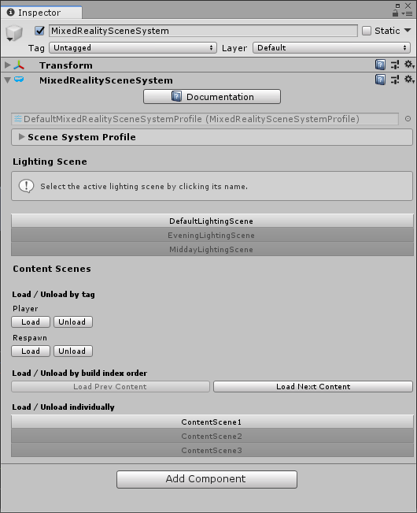

内容场景加载 Content Scene Loading
所有的内容加载操作都是异步的，而默认情况下，所有的内容加载都是加性的。 Manager和光照场景从不受内容加载操作的影响。有关监视加载进程和场景激活的信息，请参阅Monitoring Content Loading.
加载内容
To load content scenes use the LoadContent method:
为了加载内容场景，使用 LoadContent 方法：
IMixedRealitySceneSystem sceneSystem = MixedRealityToolkit.Instance.GetService<IMixedRealitySceneSystem>();
// Additively load a single content scene
await sceneSystem.LoadContent("MyContentScene");
// Additively load a set of content scenes
await sceneSystem.LoadContent(new string[] { "MyContentScene1", "MyContentScene2", "MyContentScene3" });
单场景加载
通过一个可选的mode参数，可以得到一个单一场景加载的等效。LoadSceneMode.Single，将首先卸载所有加载了的内容场景，然后再继续加载。
IMixedRealitySceneSystem sceneSystem = MixedRealityToolkit.Instance.GetService<IMixedRealitySceneSystem>();
// ContentScene1, ContentScene2 and ContentScene3 will be loaded additively
await sceneSystem.LoadContent("ContentScene1");
await sceneSystem.LoadContent("ContentScene2");
await sceneSystem.LoadContent("ContentScene3");
// ContentScene1, ContentScene2 and ContentScene3 will be unloaded
// SingleContentScene will be loaded additively
await sceneSystem.LoadContent("SingleContentScene", LoadSceneMode.Single);
下一个/上一个场景加载
可以按build index的顺序单独加载内容，这对于带用户逐个体验一组演示场景的展示应用程序非常有用。
请注意，下一个/上一个内容的加载默认使用LoadSceneMode.Single ，来保证了前一个内容是卸载的。
IMixedRealitySceneSystem sceneSystem = MixedRealityToolkit.Instance.GetService<IMixedRealitySceneSystem>();
if (nextSceneRequested && sceneSystem.NextContentExists)
{
await sceneSystem.LoadNextContent();
}
if (prevSceneRequested && sceneSystem.PrevContentExists)
{
await sceneSystem.LoadPrevContent();
}
如果至少有一个内容场景的build index低于当前加载的最低build index，则PrevContentExists返回true。如果至少有一个内容场景的build index高于当前加载的最高build index，则NextContentExists 将返回true。
如果wrap参数为真，则内容将回滚到第一个/最后一个 build index。这消除了检查下一个/前一个内容是否存在的需要:
IMixedRealitySceneSystem sceneSystem = MixedRealityToolkit.Instance.GetService<IMixedRealitySceneSystem>();
if (nextSceneRequested)
{
await sceneSystem.LoadNextContent(true);
}
if (prevSceneRequested)
{
await sceneSystem.LoadPrevContent(true);
}
由标签加载 Loading by Tag
有时需要在组中加载内容场景。一种体验的一个阶段可能由多个场景组成，所有的场景都必须同时加载才能发挥作用。为了方便，您可以标记您的场景，然后使用该标签加载或卸载它们。
IMixedRealitySceneSystem sceneSystem = MixedRealityToolkit.Instance.GetService<IMixedRealitySceneSystem>();
await LoadContentByTag("Stage1");
// 等待直到stage 1 完成
await UnloadContentByTag("Stage1");
await LoadContentByTag("Stage2);
如果艺术家想在不需要修改脚本的情况下合并/删除元素，通过标签加载也很有用。例如，使用以下两组标签运行这个脚本会产生不同的结果:
IMixedRealitySceneSystem sceneSystem = MixedRealityToolkit.Instance.GetService<IMixedRealitySceneSystem>();
await LoadContentByTag("Terrain");
await LoadContentByTag("Structures");
await LoadContentByTag("Vegetation");
测试内容 Testing content
| 场景名 | 场景标签 | 由脚本加载 |
|---|---|---|
| DebugTerrainPhysics | Terrain | • |
| StructureTesting | Structures | • |
| VegetationTools | Vegetation | • |
| Mountain | Terrain | • |
| Cabin | Structures | • |
| Trees | Vegetation | • |
最终内容 Final content
| 场景名 | 场景标签 | 由脚本加载 |
|---|---|---|
| DebugTerrainPhysics | DoNotInclude | |
| StructureTesting | DoNotInclude | |
| VegetationTools | DoNotInclude | |
| Mountain | Terrain | • |
| Cabin | Structures | • |
| Trees | Vegetation | • |
Editor Behavior
你可以在编辑器和播放模式下使用Scene System的service inspector.来执行所有这些操作。在编辑模式下，场景加载是即时的，而在播放模式下，你可以观察加载过程并使用activation tokens. 。
